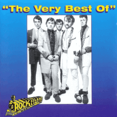

Rock Island Line - The Very Best Of (Album, 1998)
01 - Choo Choo Ch'Boogie (2:58)
02 - Go 'Way Hound Dog (2:42)
03 - Teenage Boogie (2:35)
04 - Boppin' The Blues (2:31)
05 - Ice Cream (2:40)
06 - Crossword Puzzle (2:47)
07 - If I Ain't Home (2:54)
08 - Barkin' Up The Wrong Tree (2:10)
09 - Justine (2:53)
10 - Maybe That's Why I Care (2:46)
11 - Ain't Got No Money (2:34)
12 - Boppin' At The Hardrock (2:20)
13 - Baby Says (1:54)
14 - Last Train To San Fernando (2:46)
15 - Peepin' Eyes (2:20)
16 - Right String Baby (3:02)
© Nervous Records :: [NERCD 094]
Notes
United Kingdom.
Best of 1970's Teddy Boy and authentic Rock'N'Roll Revival band
Group members on their LP album "Choo Choo Ch'Boogie" (1978) were Steve Woolly (lead vocals, guitar), Barry Gibson (lead guitar, vocals), Martin Wolltorton (bass guitar, vocals), Paul Foss (drums)
Other musicians also played in Rock Island Line during the years of band activity. For example, Dave Taylor and Iain Terry
reference information: Discogs® | Nervous Records
Review
141/366 (Project 366)
Very lively songs with good vocal harmonies. Peppy, energetic, melodic and fabulous Rockabilly with a diverse range of Rock'n'Roll, Hillbilly Boogie, Traditional Pop, Country and general Revival mood. Rock Island Line performs quite dynamically, extremely engrossed in the sound they want to make. The style of the compositions is quite extensive.
Softness, brightness, courage and brilliance are gems of tracks. But also a rather significant enthusiasm! Teddy Boy ardor not only in their own songs, but also cover versions of classic songs saturated with this energy. Fun and rave. Some songs with a special facetious presentation of arrangements and chanting. Where is somewhat rustic mood with rocking setting. Other songs with Teddyboy boppin' and others with wild rockabilly Rock'n'Roll. Sometimes crazy. And sometimes dudes make songs more sparkling. For example, "Choo Choo Ch'Boogie" with brass section and "Go 'Way Hound Dog" with violin. Fancy! Since this is a compilation of the released songs, the difference in both sound and quality of the recordings is understandable. And perhaps reflects changes in the style of the band over time.